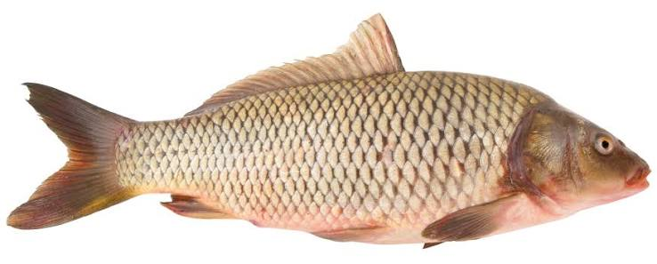

Karpers zijn zoetwatervissen die je vooral aantreft in rustige vijvers,
meren en trage rivieren. Ze kunnen indrukwekkend groot en oud worden,
en sommige exemplaren halen zelfs meer dan twintig kilo. Daardoor zijn
ze erg geliefd bij sportvissers, die vaak uren geduld nodig hebben om zo'n
slimme en sterke vis te vangen.